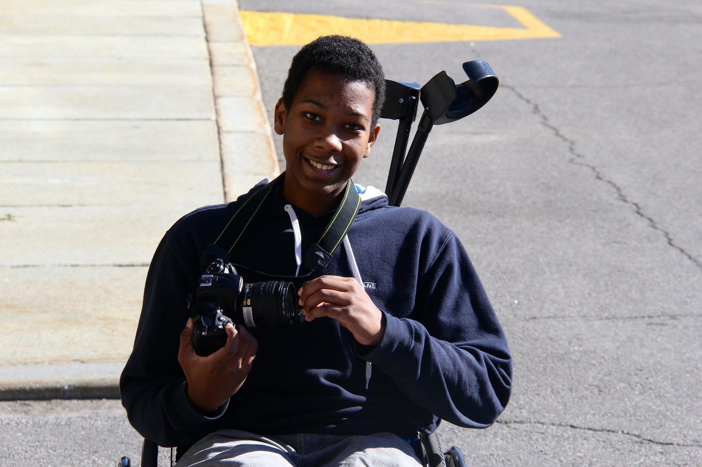

Qui suis-je
Bon prenons quelques minutes pour apprendre un peu plus à propos de moi. Tout d'abord, je m'appelle Fabrice Samedy et je suis un finissant dans le programme de Journalisme numérique à l'Université d'Ottawa. Mon parcours vers mon but de devenir un journaliste sportif a commencé il y a maintenant 5 ans alors que j'ai déménagé de ma petite localité de Joliette pour me rendre dans la capitale nationale. Pour être transparent avec vous, l'idée de vivre loin de ma famille me terrifiait, mais je suis content de ma décision et si c'était à refaire, je ne changerais aucunes décisions que j'ai prise au niveau "professionnel" depuis les 5 dernières années.
Oh j'ai oublié de mentionner quelque chose d'important à mon sujet. Je suis un homme à mobilité, autrement dit je suis handicapée. Depuis ma naissance, je vis avec une condition qui est connue sous le nom de Spina Bifida. Sans rentrer dans les détails techniques, disons que ma colonne vertébrale affecte la force de mes jambes, ce qui m'empêche de marcher correctement.
Où vous pouvez me retrouver
Vous pouvez me retrouver sur les réseaux sociaux!